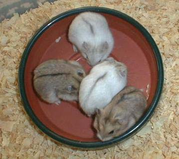
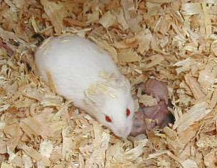

| Potential New Color Gene in the Campbells Page 2 |
|||||||||||||||||||
| I sent pictures of the Moscow hamster to different people. The colors people thought she might be included: 1. Platinum normal 2. Dull black-eyed argente 3. Dilute normal #1. Since it is recessive, I ruled out the existing platinum gene. I doubted this anyway since there were no white hairs apparent anywhere on her. #2. I mated a Moscow color to a BEA (pedigree unknown at the time since he was shipped in). I kept them together for three litters for a total of 16 babies. All were common normals. Since I needed the BEA elsewhere, I separated them and put the BEA with a dove. From this new pairing, I learned that the BEA had carried black, REA, and dilute. So from this pairing, I got data showing the Moscow color is probably not: BEA, REA, black, or dilute. #3. I paired a Moscow male to a dilute platinum blue fawn. She has finished producing now after having over 100 babies. All platinum babies have been consistent with our US platinums. None are BEWs. All have definitely color although they are lighter than many European Plats I have seen. So from this pairing, I got data showing the Moscow color is not: dilute, opal, or REA. Below is this mother with a litter of babies. Next to her are four of her babies. These are representative of all of her babies. |
|||||||||||||||||||
|  | |||||||||||||||||||
|  | |||||||||||||||||||
| This is the dilute plat blue fawn mother who was mated to a Moscow male. She is a definite albino look-alike. Next to her are four of her babies. The plats are definitely not bews. These four are representative of all of her 100+ babies. | |||||||||||||||||||
| Next I was encouraged to breed the combined colors of Moscow-opal, Moscow-argente, and Moscow-black. The Moscow color and BEA are too close to worry about breeding that combined color at this time. I three trios now have litters. I have included details on the pages which follow. |
|||||||||||||||||||
| Back to Page 1 | |||||||||||||||||||
| Go to Page 3 | |||||||||||||||||||
| Back to Campbells Colors Page | |||||||||||||||||||
| Home | |||||||||||||||||||